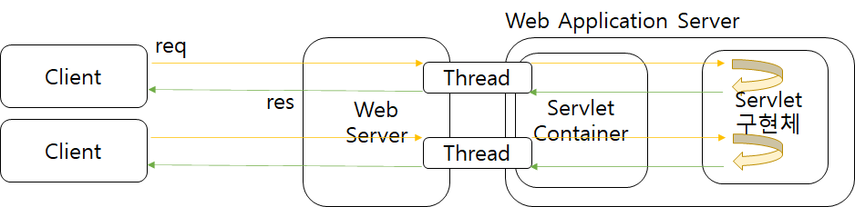
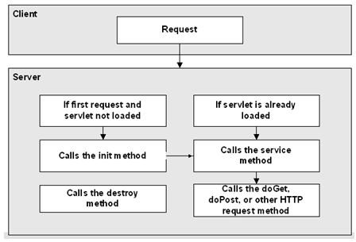
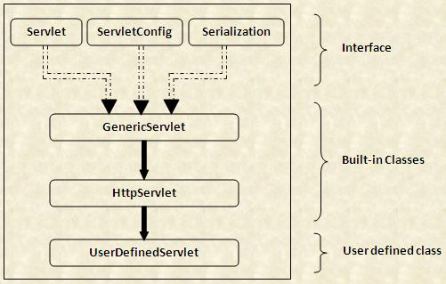
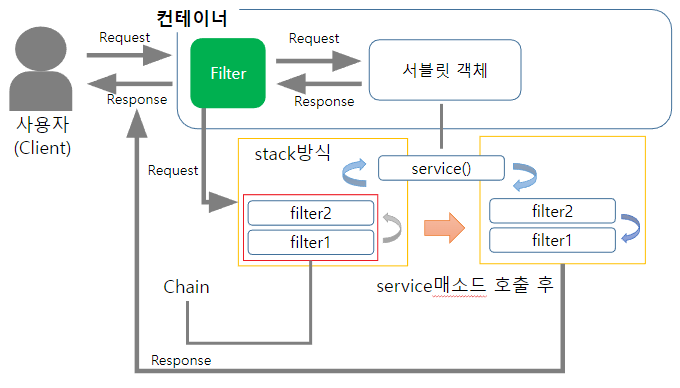

서블릿 특징
- 동적웹을 제공하기 위해 사용
- 서블릿은 자바를 기본으로 하나, 톰캣과 같은 JSP/Servlet 컨테이너에서만 실행될 수 있다.
- 스레드 방식으로 실행
- 컨테이너에서 실행되며 컨테이너 종류에 상관없이 실행 가능
서블릿 컨테이너

- 서블릿 생명주기(Life Cycle) 관리
Servlet interface 의init(), destroy(), service()을 호출한다. - 웹서버와의 통신 지원
- 멀티쓰레드 지원 및 관리
- 선언적인 보안 관리
서블릿 생명 주기

- 캐시 확인 : 이미 메모리에 해당 서블릿 객체가 생성되어 있는지 확인한다. 존재할 경우엔 init() 명령은 생략된다.
- init() : 서블릿 컨테이너가 서블릿 인스턴스를 생성한 후에 최초 1회 호출 된다.
servlet 인터페이스 에서 정의되어 있다. - doGet(), doPost() :
pulbic service()가 client 로 부터 호출되면protected service()로 위임protected service()에서 http 메서드에 따라doXXX()호출 - destroy() : service()가 모두 수행 후 종료 시에 서블릿 컨테이너가 호출하며, 서블릿이 보유한 모든 리소스를 반환
servlet 인터페이스 에서 정의되어 있다.
포워드 기능
- redirect, refresh, dispatch 기능이 존재
- dispatch 를 주로 쓰는데 서블릿에서 서블릿, JSP 로 req 를 전달 할 수 있음
- 뿐더러, redirect 에서는
req.setAttribute()로 객체 바인딩 시 브라저에서 새로운 req 를 생성해 바인딩한 객체가 사라지지만 dispatch 는 서버에서 서버로 요청을 전달하므로 바인딩한 객체가 전달될 수 있다.
ServletContext
- 톰캣 컨테이너 실행 시 Web Application 에 단 하나의 ServletConext 가 생성된다.
- 톰캣 컨테이너 와 같은 생명 주기를 갖으며, 공통 자원 정보를 가져 서블릿들과 공유해 사용할 수 있다.
ServletConfig

- 초기화 중에 서블릿에 정보를 전달하기 위해 서블릿 컨테이너에서 사용하는 서블릿 구성 객체
- 각 서블릿에 생성되며 ServletContext와 다르게 서블릿간 공유가 불가능
- 서블릿과 같은 생명 주기를 갖는다.
- 앞서 생명주기에 관련한 함수들은 servlet 인터페이스에서 정의하고 있음을 확인 했다.
- ServletConfig 인터페이스 또한 GenericServlet 에서 구현하고 있는데, 이는 ServletContext 객체를 가져오는 역할을 수행한다.
public interface ServletConfig {
public String getServletName();
public ServletContext getServletContext();
public String getInitParameter(String name);
public Enumeration<String> getInitParameterNames();
}- 또, 서블릿을 초기화 작업을 수행한다. 두가지 방법이 존재한다.
- web.xml
- @WebServlet
ServletConfig 에 정의된getInitParameter(Stirng name)으로 서블릿 설정 정보를 읽어올 수 있다.
@WebServlet(
urlPatterns = {
"/servletInit1",
"/servletInit2"
},
initParams = {
@WebInitParam(name="email",value="test@naver.com"),
@WebInitParam(name="tel",value ="01012341234")
}
)
public class ServletConfigTest extends HttpServlet {
@Override
protected void doGet(HttpServletRequest req, HttpServletResponse resp) throws ServletException, IOException {
String email = getInitParameter("email");
String tel = getInitParameter("tel"); load-on-startup
- 서블릿은 기본적으로 최초 요청 시에 서블릿을 클래스 로딩 하고 이를 재사용해 요청을 처리한다.
- 이는 최초 요청의 response 시간의 지연을 의미하며, load-on-startup 은 이러한 단점을 보완 하기위해 사용하는 기능이다.
서블릿 속성
- 다음 세가지에 저장되는 정보를 서블릿 속성 이라한다.
- SevletContext
- HttpSession
- HttpServletRequest
getAttribute(), setAttribute()로 조작 가능하다.
서블릿 스코프
- 서블릿 API 에 바인딩된 속성에 대한 접근 범위
- 어플리케이션 스코프
ServletContext, 어플리케이션 전체에서 접근 가능 - 세션 스코프
HttpSession, 브라우저에서만 접근 가능 - 리퀘스트 스코프
HttpServletRequest, 요청/응답 사이클에서만 접근 가능
- 어플리케이션 스코프
Filter

- 서블릿이 요청, 응답 시에 지정한 작업을 처리 가능하다. 활용 용도는 다음과 같다.
- 응답 필터
- 응답 결과 암호화
- 서비스 시간 측정
- 요청 필터
- 사용자 인증, 권한 검사
- 인코딩
- 로그 작업
public interface Filter {
default public void init(FilterConfig filterConfig) throws ServletException {}
// 웹 컨테이너에 의해 호출되고, 서블릿 컨테이너 필터를 인스턴스화한 후 init 메소드를 정확히 한 번 호출
public void doFilter(ServletRequest request, ServletResponse response, FilterChain chain) throws IOException, ServletException;
// 서블릿 컨테이너는 웹 어플리케이션을 종료하기 전에 필터들에 대해 destroy()를 호출해서 마무리 작업 (예: 메모리, 파일 핸들, 스레드) 을 수행
default public void destroy() {}
}Web Conatiner vs Sevlet Container
웹 컨테이너 안에 JSP 컨테이너, Servlet 컨테이너, EJB컨테이너가 있다.
서블릿 클래스에 대한 웹 컨테이너를 서블릿 컨테이너, JSP 파일에 대한 웹 컨테이너를 JSP 컨테이너라고 한다. 다만 실제적으로 이 둘을 혼용하여 웹 컨테이너(서블릿 컨테이너)로 통칭하는 경우가 많다.
Listner
@WebListener
public class HttpSessionListenerImpl implements HttpSessionListener {
@Override
public void sessionCreated(HttpSessionEvent se) {
System.out.println("Session Created!");
}
@Override
public void sessionDestroyed(HttpSessionEvent se) {
System.out.println("Session Destroyed!");
}
}